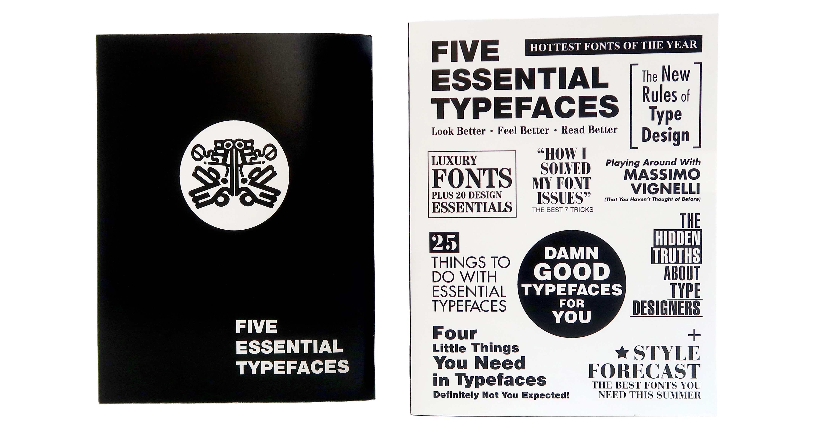

What if Massimo Vignelli was your typographic playground?
How many ways can you spell "Massimo Vignelli"? I decided to find out using the five "essential" typefaces that shaped the design world. This zine is divided into five chapters, each giving a stage to a classic font—from the elegance of Bodoni to the "Vignelli-approved" perfection of Helvetica.
Throughout the book, I experimented with Vignelli’s name as my creative playground. It’s a bit like a typographic masterclass where Massimo himself is the star student. Whether you’re a font nerd or just a fan of clean lines, this zine is a celebration of the letters that make design speak.
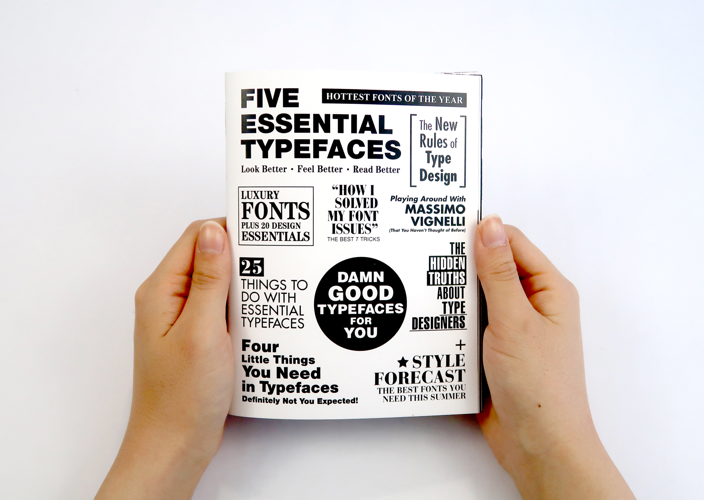
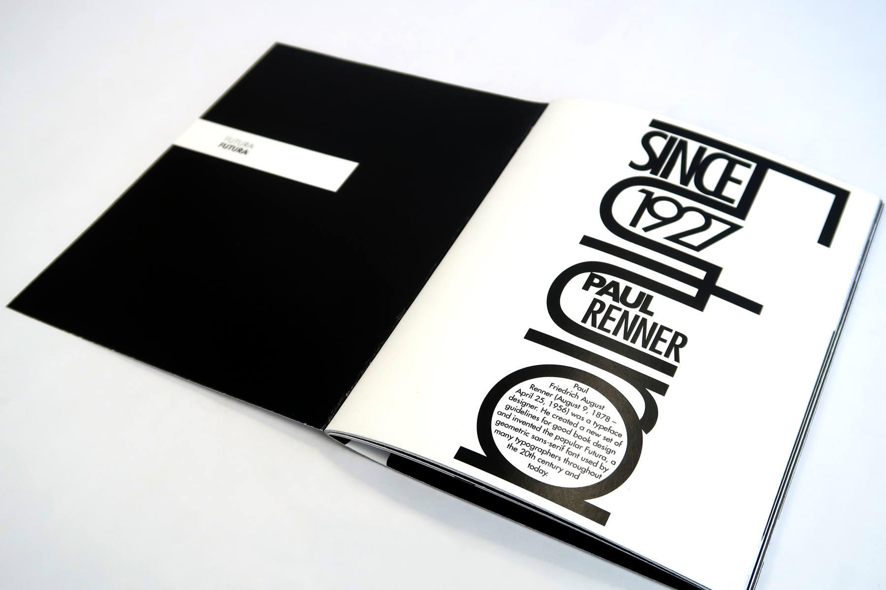
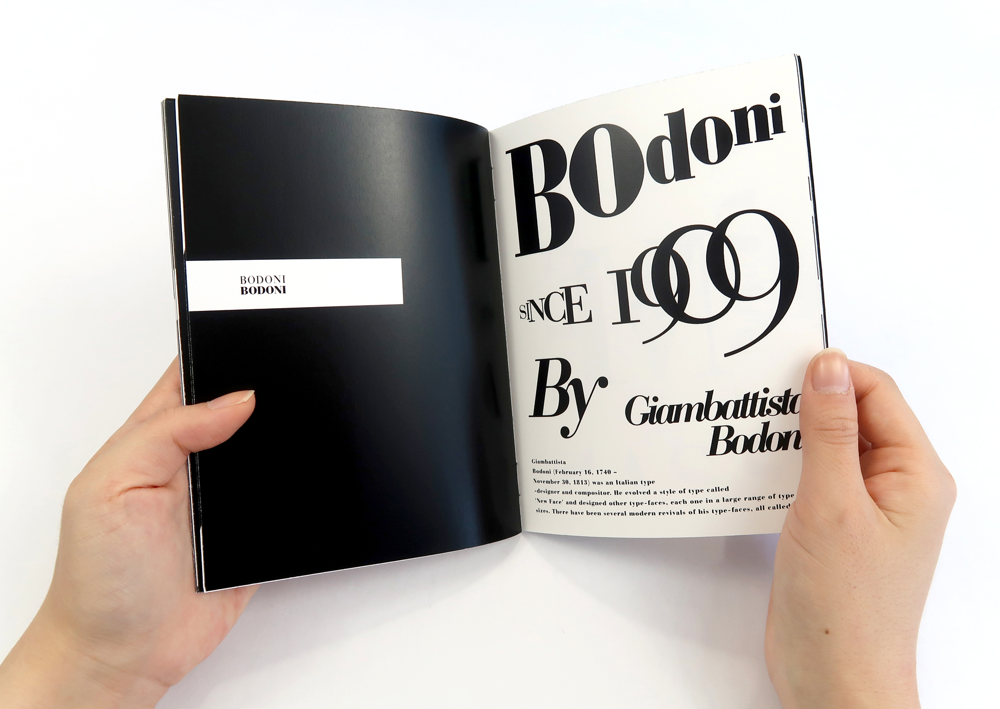
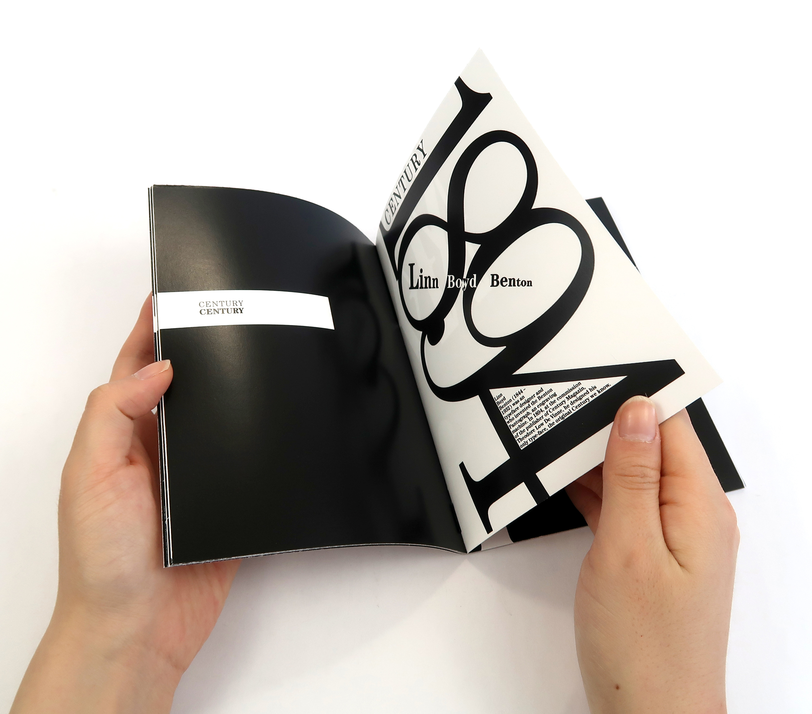
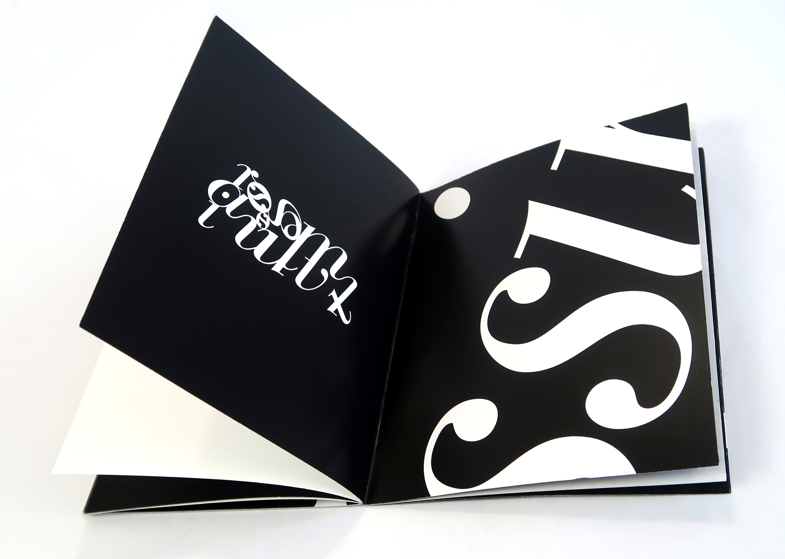
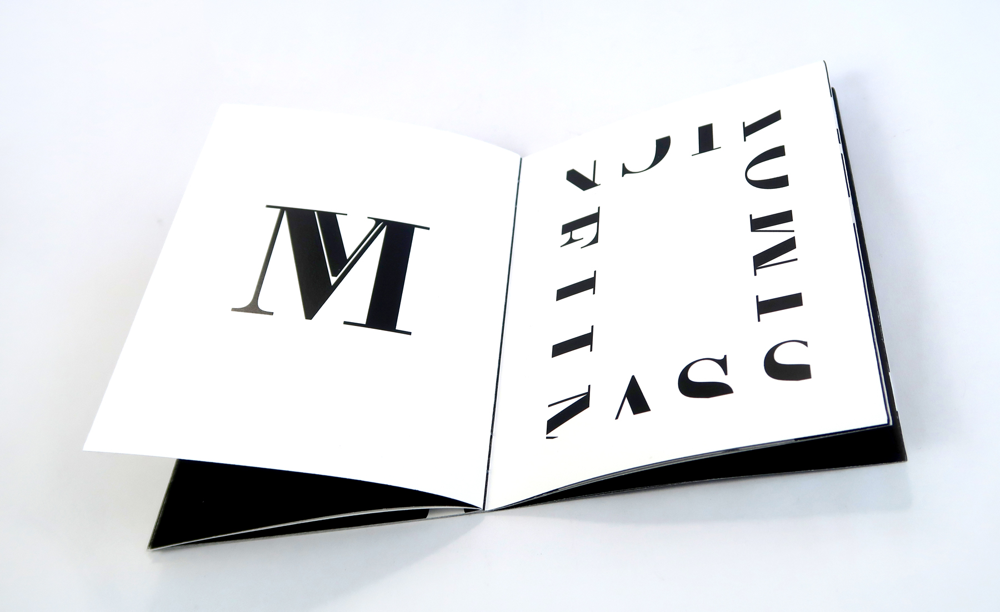
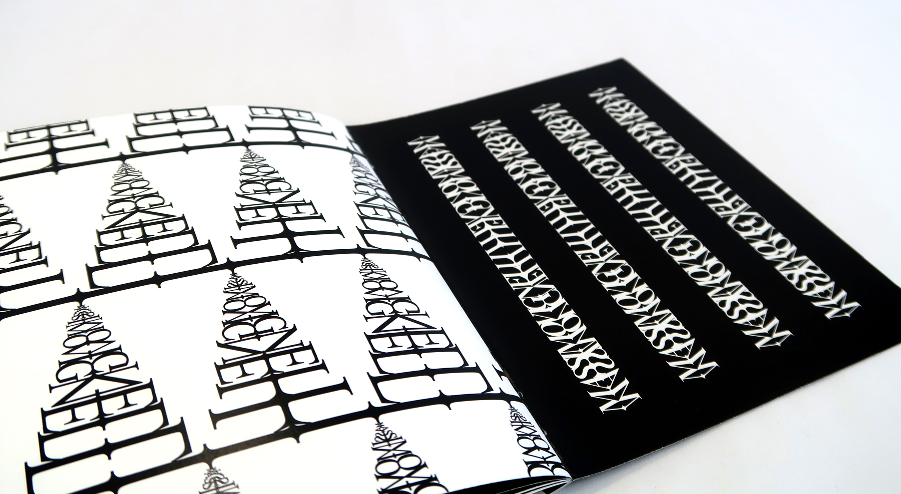
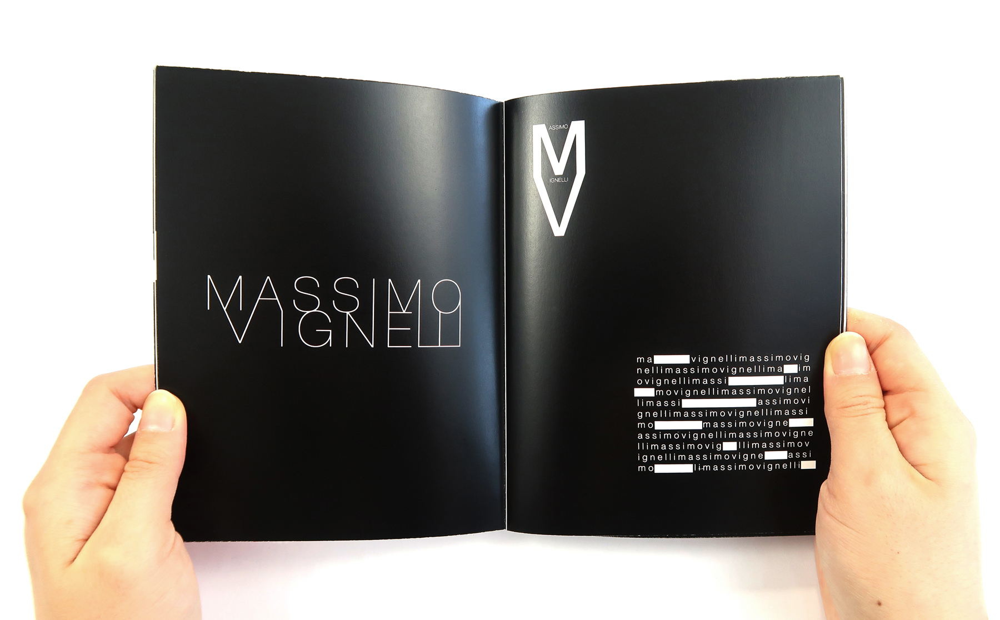
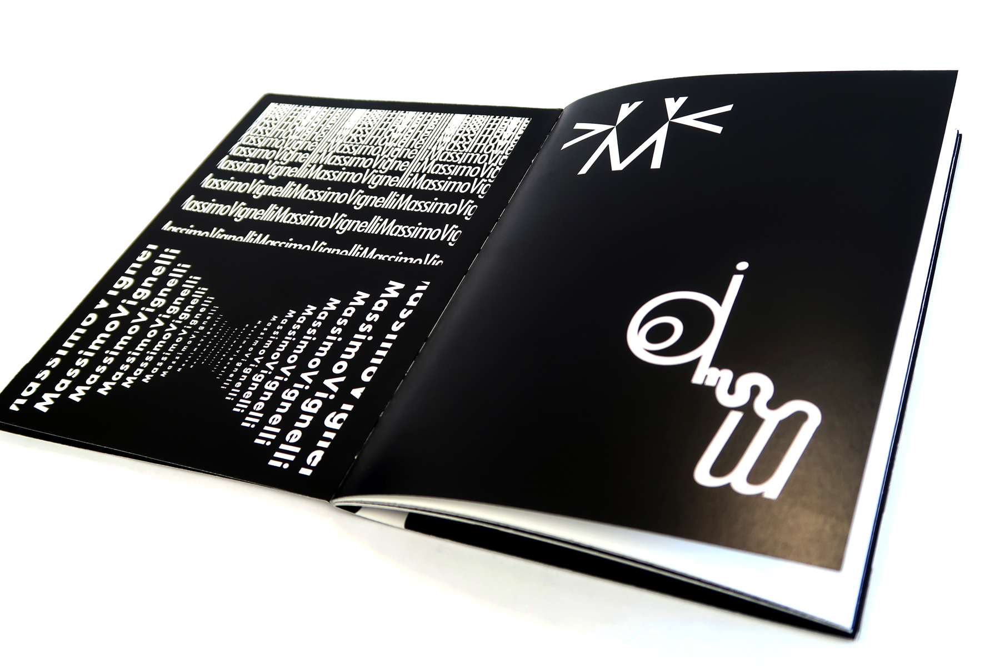
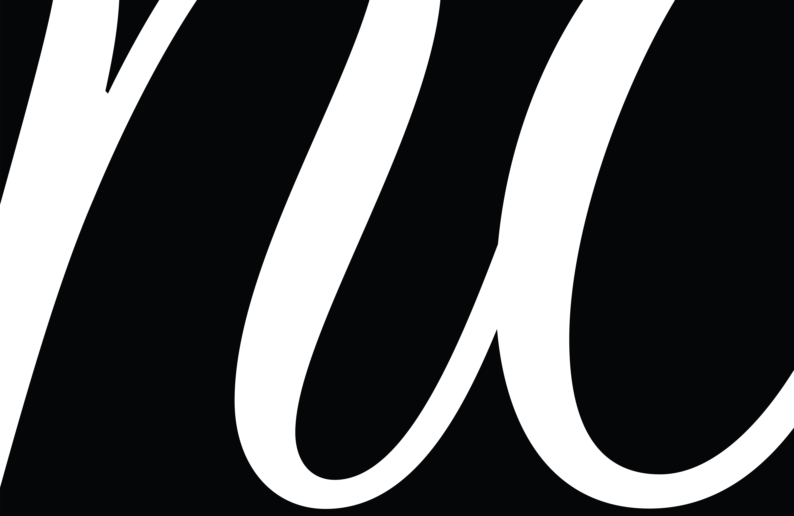
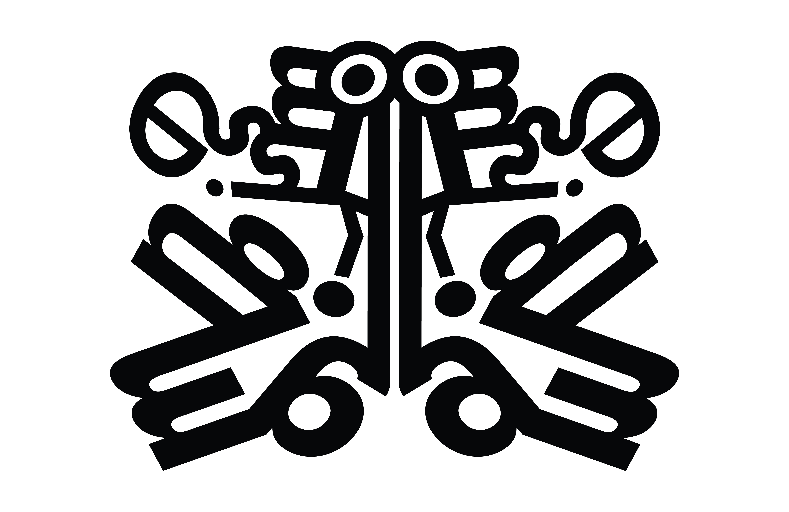
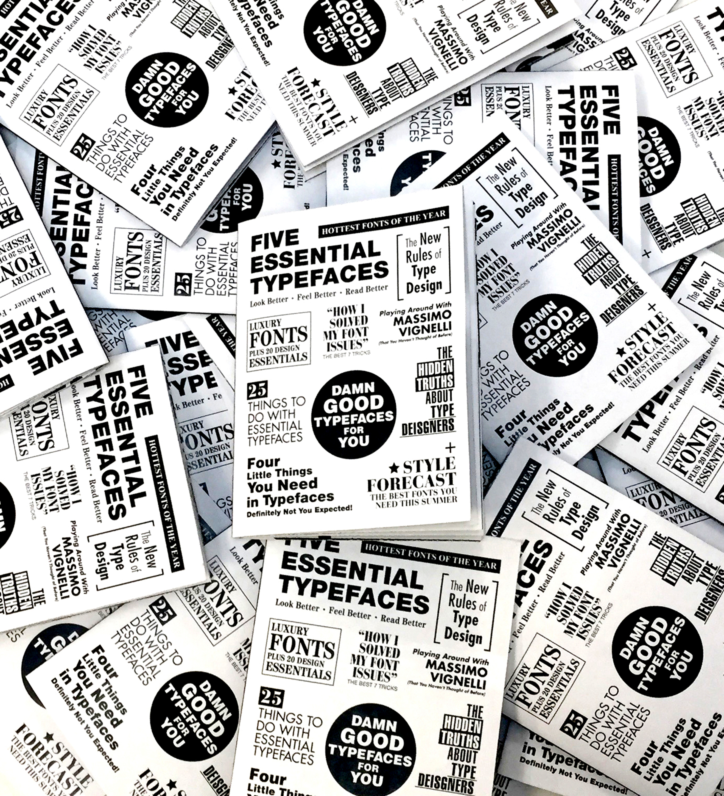